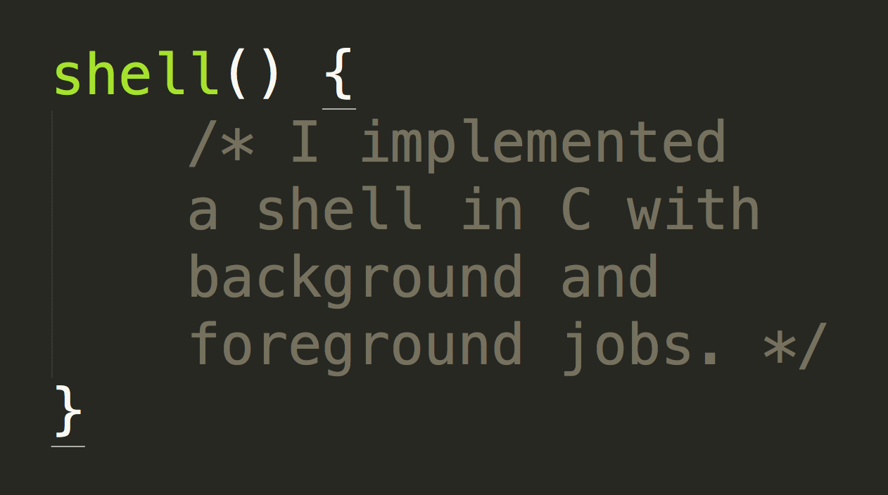

Shell.c
Terminal based C-Shell Emulator
Request Source Code.
Shell is a project that I built in C as part of a computer systems course. The project utilizes a
REPL
and hand-written string parsing functions to emulate your computer's terminal/shell.
I wrote the shell itself from scratch, using only small amounts of supplied code for keeping track of different jobs running in the background.
Michael Markell 2015